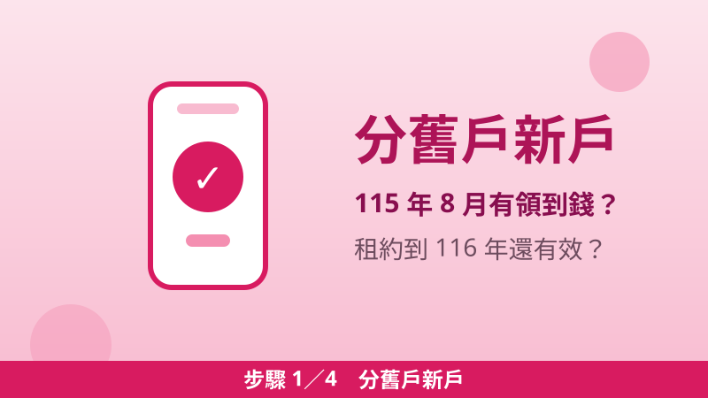

116 年度租金補貼 2027/1/1 起受理：74 萬戶、舊戶直接帶入，新戶 4 步驟＋補件 7 日一次看懂
115 年度租金補貼受理到 2026/12/31 下午 5 點；116 年度（2027 年）已於 2026/10/13 公告，2027/1/1 上午 9 點起受理到 12/31 下午 5 點，計畫戶數 74 萬戶。重點：符合條件的舊戶直接帶入、不用重新申請；新戶照下面 4 個步驟走，送件前先看懂補件 7 日規則。
計畫戶數 74 萬戶
先分清楚：你是舊戶還是新戶？
舊戶分兩種，符合任一種且已檢附 116 年有效租賃契約，就直接帶入、不用再申請。
- 第一種舊戶：115 年 8 月仍有核撥紀錄者（審查基準日為 115 年 9 月 1 日）。
- 第二種舊戶：115 年 9 月 1 日至 12 月 31 日申請、經審查合格者（審查基準日為 116 年 1 月 1 日）。
- 帶入後要注意：租約消滅後 3 個月內，要檢附 116 年仍有效的新租賃契約，否則續撥會中斷。
- 都不符合就是新戶：116 年 1 月 1 日上午 9 點起，線上、郵寄或臨櫃重新申請。
💡 不確定是不是舊戶？打諮詢專線 (02) 7729-8003（週一至週五 8:00–18:00）問租屋地縣市政府最準。
116 年度金額、門檻有什麼變？
金額表與加碼倍數跟 115 年度完全相同，變的是所得門檻——最低生活費調升，門檻跟著往上調。
| 租屋地 | 第 1 級 | 第 2 級 | 第 3 級 |
|---|---|---|---|
| 臺北市 | 8,000 | 5,000 | 3,000 |
| 新北市市區、桃園市、新竹縣市、臺中市市區 | 5,000 | 4,000 | 2,400 |
| 臺南市市區、高雄市市區 | 4,000 | 3,600 | 2,200 |
| 新北市其他區、臺中市其他區、臺南市其他區、高雄市其他區、其餘縣市 | 3,600 | 3,200 | 2,000 |
補貼以實際租金核計；同時符合兩種以上加碼身分者擇高補貼、不相乘。
| 加碼身分 | 倍數 |
|---|---|
| 單身青年（成年、未達 40 歲、單身） | 1.2 倍 |
| 新婚家庭（114 年 12 月 31 日前登記結婚） | 1.3 倍 |
| 新婚家庭（115 年 1 月 1 日後登記結婚） | 1.5 倍 |
| 育有未成年子女（114 年 12 月 31 日前已有）：1 人／2 人／3 人 | 1.4／1.6／1.8 倍，逾 3 人每增 1 名 +0.2 倍 |
| 育有未成年子女（115 年 1 月 1 日後新生兒）：1 人／2 人／3 人 | 2／2.5／3 倍，逾 3 人每增 1 名 +0.5 倍 |
| 經濟弱勢（低收入戶、中低收入戶） | 1.4 倍 |
| 社會弱勢（特殊境遇家庭、65 歲以上、身心障礙者、原住民、家暴或性侵害受害者及其子女、災民、遊民等） | 1.2 倍 |
所得門檻（116 年度，元／人／月）：左欄為一般家庭（3 倍），右欄為新婚／育有未成年子女家庭（3.5 倍）。臺北市 62,232／72,604｜新北市 53,250／62,125｜桃園市 51,558／60,151｜臺中市 49,293／57,509｜臺南市 46,545／54,303｜高雄市 50,910／59,395｜金門縣、連江縣 45,519／53,106｜其餘縣市 46,545／54,303。
- 每月租金上限：臺北市 55,000 元；新北、桃園、臺中、新竹市縣 45,000 元；臺南、高雄 40,000 元；其餘 39,000 元。租金超過上限不能申請。
- 所得看哪一年：審查基準日在 116/6/30 前，看 114 年度所得；116/7/1 後的新戶，看 115 年度所得。
- 評點新制：116 年起納入評點基準表，但公告明載「116 年案件尚不需進行評點程序」。
四步驟：從確認身分到送件

步驟 1分舊戶新戶
115 年 8 月有核撥紀錄、或 115/9/1–12/31 申請合格，且已檢附 116 年有效租賃契約 → 直接帶入；不符合就是新戶，116/1/1 起重新申請。
步驟 2確認租約有效
舊戶先看租約是否到 116 年還有效，租約消滅 3 個月內要補新租約；新戶等 116/1/1 上午 9 點起，線上、郵寄或臨櫃申請。
步驟 3備齊文件送件
租賃契約影本（6 項記載缺一不可）、存摺封面、弱勢身分證明；線上申請存檔後一定要點「送出」才算完成。
步驟 4等通知查進度
資料不全時機關一次書面通知、限期 7 日內補正；審查原則上 3 個月內完成，核定後 1 個月內發核定函；進度與補件都在線上專區查。
還沒申請 115 年度？12/31 下午 5 點前送件仍來得及
115 年度採隨到隨辦，受理到 2026 年 12 月 31 日下午 5 點。依作業規定第十六點，115 年 12 月 31 日以前申請的案件，仍依 115 年 1 月 9 日修正發布的規定辦理——年底前送件適用 115 年度門檻（臺北 61,137 元）。完整教學見〈租金補貼申請教學（115 年度）〉，加碼試算見〈租金補貼加碼怎麼算？〉。
⚠️ 拖到最後一天才送要小心：送件後還要審查、可能要補件，補件期限只有 7 日，跨年假期一拖就容易逾期。
5 個地雷，補件通知只來一次
- 同一家庭只能送一件：送了 2 件以上，機關書面限期 7 日內擇一，逾期全部駁回。
- 承租人必須是申請人本人：租約承租人是配偶或其他家庭成員，7 日內補正為同一人或變更申請人，逾期駁回。
- 補件逾期分三種下場：涉及金額的不予採計、涉及評點的不列計、涉及資格的直接駁回。
- 租約 6 項記載缺一不可：出租人姓名、承租人姓名、身分證字號、地址、金額、期限，缺一項就是補件。
- 領到後別斷炊：搬家或換約，租約消滅 3 個月內檢附新租約續撥；出租人死亡 6 個月內檢附新租約；逾期未檢附，期間不核撥。
📎 資料來源
- 內政部國土管理署「公告 116 年 300 億元中央擴大租金補貼專案計畫租金補貼受理申請」（115.10.13 國署住字第 1151195952 號）：nlma.gov.tw
- 116 年度公告附件（附表一所得門檻、附表二租金上限、附表五金額表、附表六加碼表、附表七受理單位）：nlma.gov.tw 公告附件 PDF
- 「三百億元中央擴大租金補貼專案計畫作業規定」（115.10.6 修正，補件 7 日、審查 3 個月、舊戶帶入、第十六點）：nlma.gov.tw
- 我的 E 政府「115 年最新 300 億租金補貼全攻略」（資料來源：內政部國土管理署）：gov.tw
- 300 億元中央擴大租金補貼線上申請作業網站：has.nlma.gov.tw
最後查證日期：2026-11-10
免責聲明：本文僅供參考，申請資格、級別認定與補貼金額以政府官方最新公告及租賃地縣市政府核定為準；116 年度金額表與加碼倍數與 115 年度相同，所得門檻以 116 年度公告附表一為準。